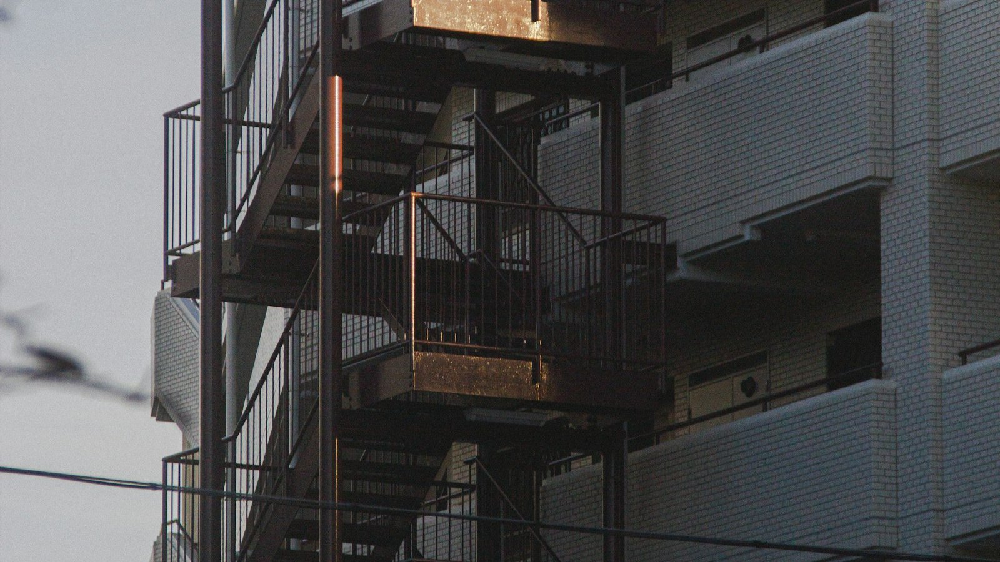
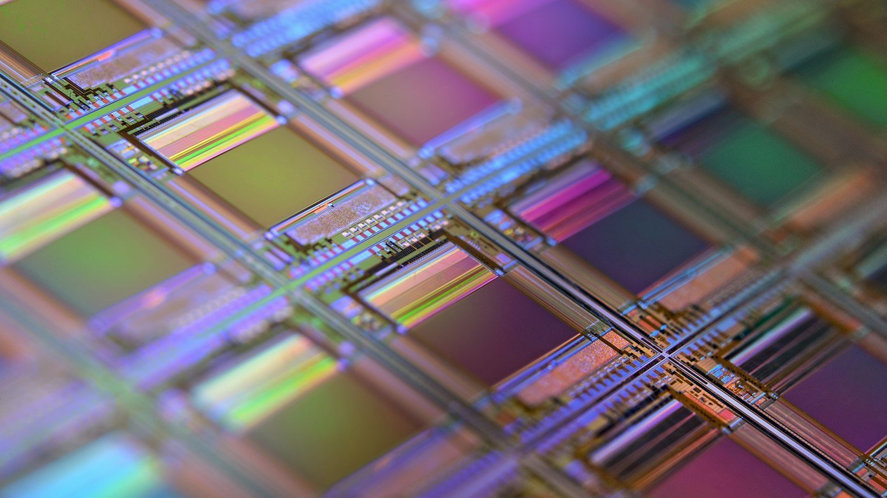
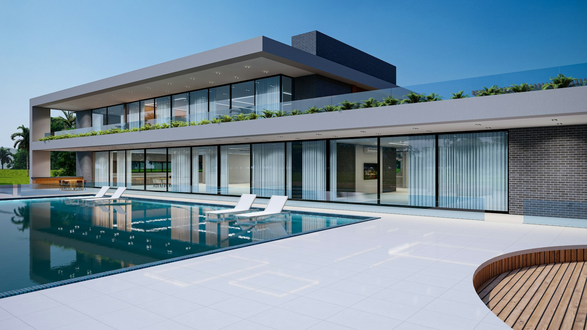
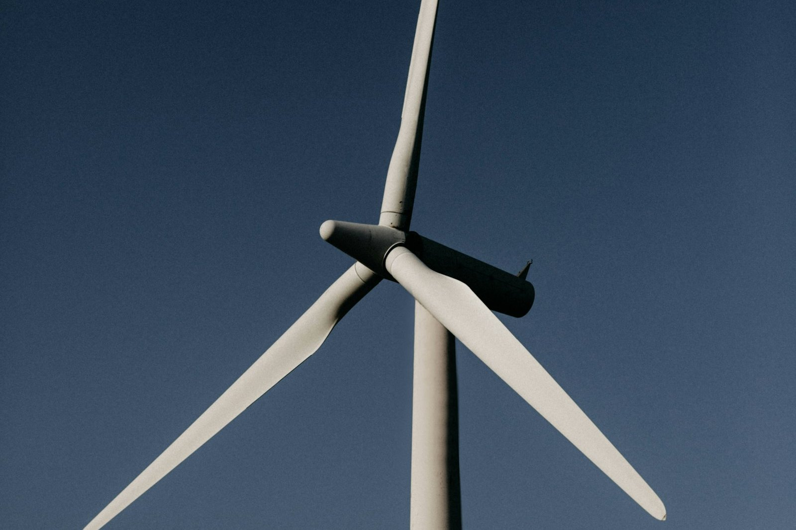
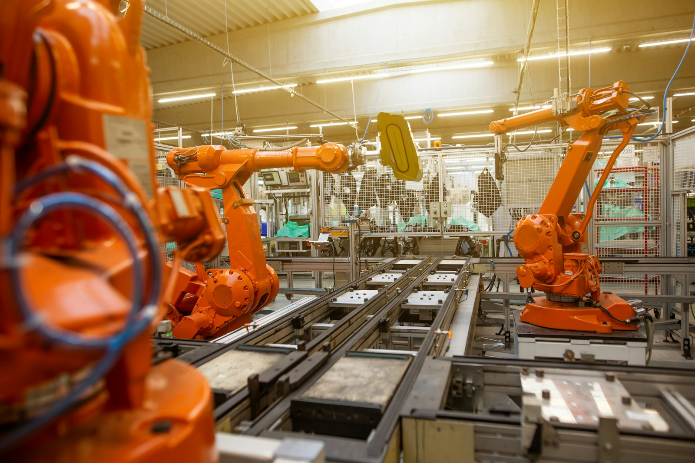
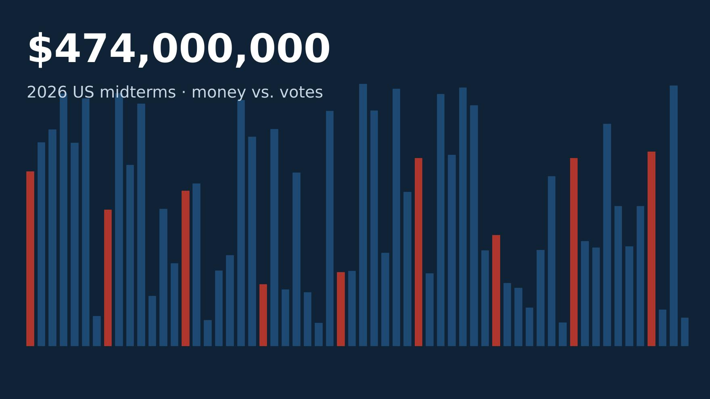
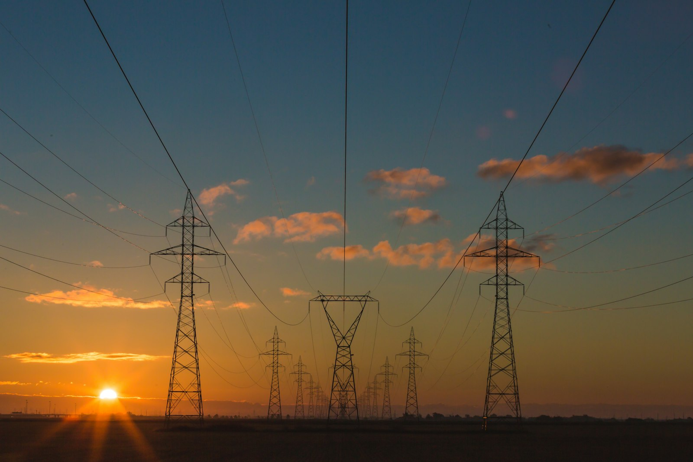
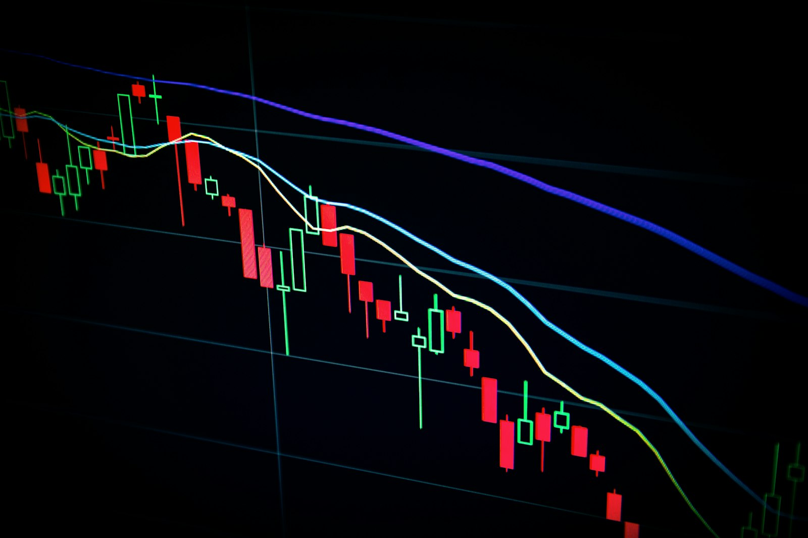
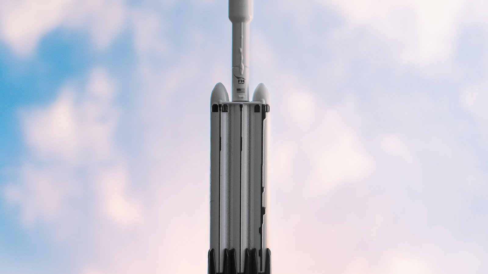
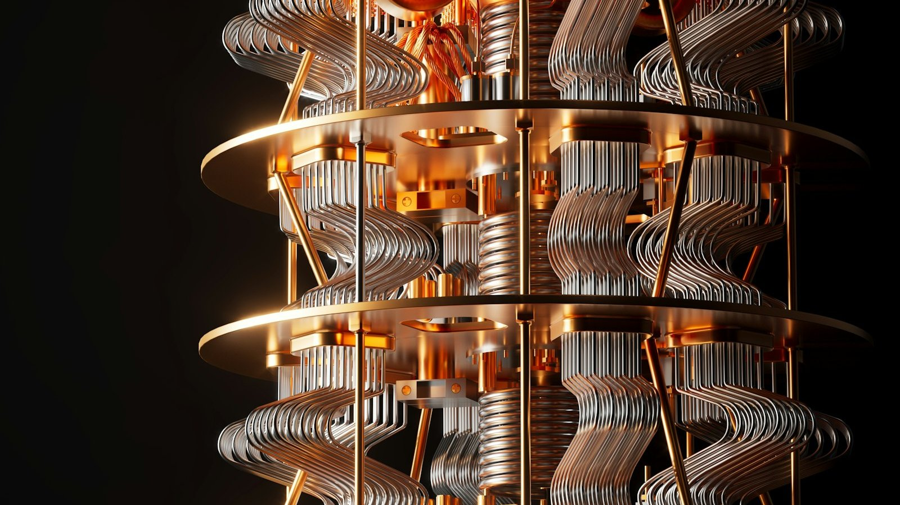

記事 このサイトだけの読み物

マンションの短期転売に重い税をかけると、価格と買取再販はどう変わるのか――国交省の登記データと税率の試算で考える2026-11-12

量子コンピュータ3社の手元資金は、今の赤字のペースで何年もつのか――IonQ・D-Wave・Rigettiの7〜9月期で試算する2026-11-11
Anthropicの調達750億〜1,000億ドルは史上最大級か――過去の大型IPOの規模と、上場の日に起きてきたこと2026-11-10

3メガバンクの通期純利益の予想は、11月13日の中間決算でどこまで固まるのか2026-11-09

NOTA（旧NOT A HOTEL）の想定時価総額1,110億円は、何を織り込んだ値段なのか2026-11-08

マスク氏の「タービン不払い」と民主党の議会は、ソフトバンクグループの財務をどこまで揺らすのか2026-11-07

中国当局はなぜM&Aを止めるのか――ソフトバンクG・ABB案件を中国の審査記録の中に置く2026-11-06

マスク氏の4.74億ドルは、票をどれだけ動かせたのか――献金・所得別の投票・過去の中間選挙から検証する2026-11-05

メモリの利益率は、価格が何割下がるまで耐えられるか――マイクロン・SKハイニックス・キオクシアの決算から逆算する2026-11-04

AIの電力は2030年までにどこまで増え、どの電源で賄えるのか――再エネ・原子力・火力・核融合を数字で並べる2026-11-02

AnthropicのS-1を読む――黒字はいつ見えるのか、いちばん重いコストは何か2026-11-01

日銀の0.25%の利上げで、メガバンクの金利収入は何%増えるのか2026-10-31

AIの設備投資は何年で回収できるのか――アルファベット・アマゾン・マイクロソフトの7〜9月期で試算する2026-10-30
中央銀行は年に何回、金利を決めるべきか――FOMCの「年6回」と、実際に金利が動いた回数2026-10-29
Waymoとテスラ、自動運転の覇権を分けるのは安全の実績か量産の台数か2026-10-28

AnthropicとOpenAIの上場は成功するか――企業価値とソフトバンクグループへの影響を数字で検証する2026-10-27

SpaceXの400億ドルの借金は何%で借りられたのか。CoreWeaveの15%と並べる2026-10-26
メガバンク3行とりそなの勘定系システムは、本当に古くて危ないのか2026-10-25
サイバー攻撃は世界同時株安の引き金になりうるか2026-10-24
矛より強い盾はない。マイクロソフトのクラウドとお名前.comの事件から見る、守りの技術と限界2026-10-23

PHP2Shellの48時間。ウェブの7割を支える言語の欠陥は、どう見つかり、どう塞がれたのか2026-10-22

宇宙企業がAIクラウドになる。計算資源を競合に貸すという商売2026-10-21

量子コンピュータの4社を、方式と数字で比べる2026-10-20